Liste des objets de Valheim
Où le trouver, dans quel biome et avec quel outil ? Cette liste couvre 864 objets – matériaux, nourriture, armes, armures et trophées. Pour chaque objet, tu vois sa provenance (arbres, gisements, créatures, coffres, marchands), l’outil nécessaire, la recette et son utilisation. Toutes les données sont extraites directement des fichiers du jeu (version 1.0.21).
Aucun objet trouvé.
Matériaux
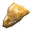
Ambre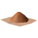
Assaisonnement de la gourde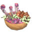
Bol gourmand des Terres de cendres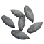
Graines de lierre des cendres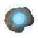
Œil de naingris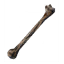
Os atrophié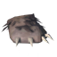
Patte d'ours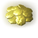
Piastres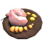
Suprême de lièvre des brumes cru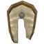
Viande de gueule-d'osNourriture et potions
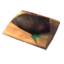
Boudin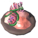
Écrasée de viande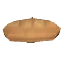
Pain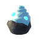
Sorbœil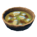
Soupe de navets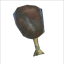
Viande avariée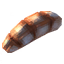
Viande de fouineur cuiteArmes, outils et munitions
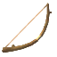
Arc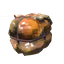
Bombe de bile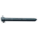
Carreau calciné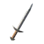
Couteau en argent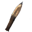
Couteau en cuivre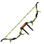
Croc de draugr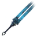
Égorgeuse flagellante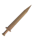
Épée en bois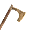
Hache en bronzeArmures, boucliers et accessoires
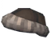
Bonnet en fourrure marron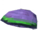
Bonnet violet simple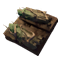
Bottes de racines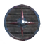
Bouclier en flametal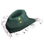
Capuche de l'Avant-garde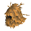
Capuche en fourrure de lox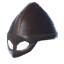
Casque en cuir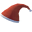
Chapeau de Noël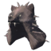
Coiffe de l'ours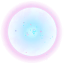
Lumière de feu-follet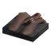
Pantalon d'Eitr tissé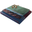
Tunique rouge avec capeTrophées
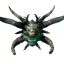
Trophée de Fader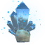
Trophée de golem de pierre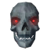
Trophée de guerrier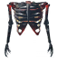
Trophée de sorcier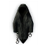
Trophée de spectrePoissons et divers
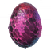
Œuf de dragon